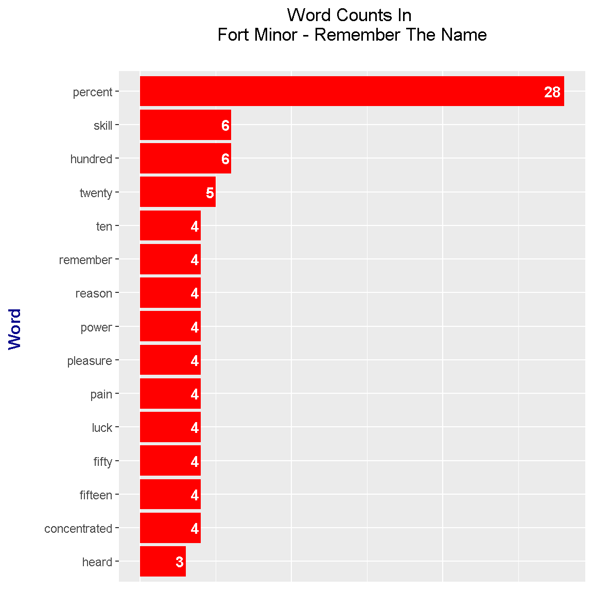
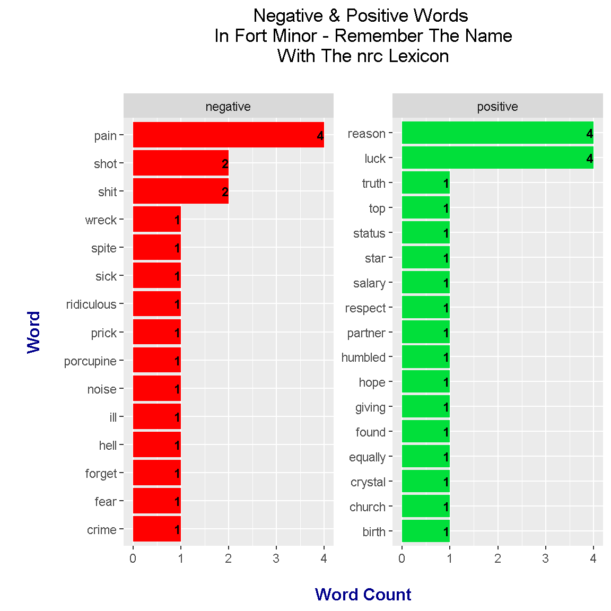
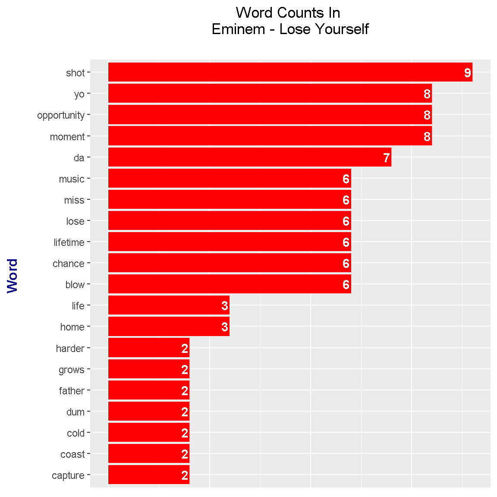

Text Mining/Analysis On A Few Rap Lyrics With R Programming
Hi there. In this page, I share some work in the R programming language where I analyze rap lyrics. The rap lyrics are analyzed with text mining. Results are shared through code output and plots.
References include the R Graphics Cookbook by Winston Chang and Text Mining with R - A Tidy Approach by Julia Silge and David Robinson. Lyrics were taken from a lyrics website (azlyrics.com I think).
Sections
Introduction
Looking at rap music is one option when it comes to analyzing text. Rap lyrics generally contain more words than other musical genres.
In this page, I share some experimental work in the R programming language where I analyze rap lyrics from the tracks Fort Minor - Remember The Name and Eminem - Lose Yourself.
The R packages that I use are dplyr for data wrangling and data manipulation, ggplot2 for plotting results, tidytext for text analysis, and tidyr for data cleaning and data formatting.
# Load libraries into R:
library(dplyr)
library(ggplot2)
library(tidytext)
library(tidyr)
Fort Minor - Remember The Name Lyrics Analysis
The artist Fort Minor was a side project from the Linkin Park member Mike Shinoda. Mike sometimes provides vocals in the form of rapping in a few of the Linkin Park tracks. Fort Minor’s Remember The Name single was released in 2005 and was featured in the video game NBA Live 06, the 2006 & 2007 NBA Playoffs and in the 2008 NBA draft.

Source: https://www.rarerecords.com.au/wp-content/uploads/2016/05/FORT-MINOR-Remember-The-Name.jpg
{kind=link}
### 1) Fort Minor - Remember The Name
# Read Fort Minor - Remember The Name lyrics into R:
remember_lyrics <- readLines("fortMinor_rememberTheName_lyrics.txt")## Warning in readLines("fortMinor_rememberTheName_lyrics.txt"): incomplete
## final line found on 'fortMinor_rememberTheName_lyrics.txt'# Preview the lyrics:
remember_lyrics_df <- data_frame(Text = remember_lyrics) # tibble aka neater data frame
head(remember_lyrics_df, n = 10)## # A tibble: 10 x 1
## Text
## <chr>
## 1 You ready?! Let's go!
## 2 Yeah, for those of you that want to know what we're all about
## 3 It's like this y'all (c'mon!)
## 4
## 5
## 6 This is ten percent luck, twenty percent skill
## 7 Fifteen percent concentrated power of will
## 8 Five percent pleasure, fifty percent pain
## 9 And a hundred percent reason to remember the name!
## 10
The key function that will help in obtaining word counts is the unnest_tokens() function. Each word from the song lyrics will be in a row.
# Unnest tokens: each word in the lyrics in a row:
remember_words <- remember_lyrics_df %>%
unnest_tokens(output = word, input = Text)
# Preview with head() function:
head(remember_words, n = 10)## # A tibble: 10 x 1
## word
## <chr>
## 1 you
## 2 ready
## 3 let's
## 4 go
## 5 yeah
## 6 for
## 7 those
## 8 of
## 9 you
## 10 that
Word Counts In Fort Minor - Remember The Name
There are words in the English language that do not offer much meaning on its own but it helps make sentences flow. These words are called stop words. An anti_join() from the dplyr package in R is used to remove stop words from the Remember The Name lyrics.
### 1a) Word Counts in Remember The Name:
# Remove English stop words from Remember The Name:
# Stop words include the, and, me , you, myself, of, etc.
remember_words <- remember_words %>%
anti_join(stop_words)## Joining, by = "word"
The count() function is used to obtain the words counts. These results are plotted as a sideways bar graph with the ggplot2 package functions.
# Word Counts:
remember_wordcounts <- remember_words %>% count(word, sort = TRUE)
head(remember_wordcounts, n = 15)## # A tibble: 15 x 2
## word n
## <chr> <int>
## 1 percent 28
## 2 hundred 6
## 3 skill 6
## 4 twenty 5
## 5 concentrated 4
## 6 fifteen 4
## 7 fifty 4
## 8 luck 4
## 9 pain 4
## 10 pleasure 4
## 11 power 4
## 12 reason 4
## 13 remember 4
## 14 ten 4
## 15 heard 3# Plot of Word Counts (Top 15 Words):
remember_wordcounts[1:15, ] %>%
mutate(word = reorder(word, n)) %>%
ggplot(aes(word, n)) +
geom_col(fill = "red") +
coord_flip() +
labs(x = "Word \n", y = "\n Count ", title = "Word Counts In \n Fort Minor - Remember The Name \n") +
geom_text(aes(label = n), hjust = 1.2, colour = "white", fontface = "bold") +
theme(plot.title = element_text(hjust = 0.5),
axis.title.x = element_blank(),
axis.ticks.x = element_blank(),
axis.text.x = element_blank(),
axis.title.y = element_text(face="bold", colour="darkblue", size = 12))
In Fort Minor - Remember The Name, the word percent is used a lot. The word skill comes in at second place with a count of 6. Other common words include number words, reason, power, pleasure, and pain. These common words pretty much come from the chorus.
This is ten percent luck, twenty percent skill,
Fifteen percent concentrated power of will
Five percent pleasure, fifty percent pain
And a hundred percent reason to remember the name!
Bigrams: Two Word Phrases
### 1b) Bigrams (Two-Word Phrases) in Remember The Name:
remember_bigrams <- remember_lyrics_df %>%
unnest_tokens(bigram, input = Text, token = "ngrams", n = 2)
# Look at the bigrams:
remember_bigrams## # A tibble: 667 x 1
## bigram
## <chr>
## 1 you ready
## 2 ready let's
## 3 let's go
## 4 go yeah
## 5 yeah for
## 6 for those
## 7 those of
## 8 of you
## 9 you that
## 10 that want
## # ... with 657 more rows
Just like with the single words, we want to remove stop words in the bigrams. We can’t easily remove the stop words in the bigrams and the two word phrases are in one column. The separate() function from R’s tidyr package is used to separate the words into two separate words. From R’s dplyr package, the filter() function is used to remove words that are stop words.
# Remove stop words from bigrams with tidyr's separate function
# along with the filter() function
bigrams_remember_sep <- remember_bigrams %>%
separate(bigram, c("word1", "word2"), sep = " ")
bigrams_remember_filt <- bigrams_remember_sep %>%
filter(!word1 %in% stop_words$word) %>%
filter(!word2 %in% stop_words$word)
# Filtered bigram counts:
bigrams_remember_counts <- bigrams_remember_filt %>%
count(word1, word2, sort = TRUE)
head(bigrams_remember_counts, n = 15)## # A tibble: 15 x 3
## word1 word2 n
## <chr> <chr> <int>
## 1 hundred percent 6
## 2 percent skill 5
## 3 twenty percent 5
## 4 concentrated power 4
## 5 fifteen percent 4
## 6 fifty percent 4
## 7 luck twenty 4
## 8 percent concentrated 4
## 9 percent luck 4
## 10 percent pain 4
## 11 percent pleasure 4
## 12 percent reason 4
## 13 pleasure fifty 4
## 14 skill fifteen 4
## 15 ten percent 4
The words are united with the use of the unite() function along with their counts. A bar graph with the help of ggplot2 can be generated.
# Unite the words with the unite() function:
remember_bigrams_counts <- bigrams_remember_counts %>%
unite(bigram, word1, word2, sep = " ")
remember_bigrams_counts## # A tibble: 52 x 2
## bigram n
## * <chr> <int>
## 1 hundred percent 6
## 2 percent skill 5
## 3 twenty percent 5
## 4 concentrated power 4
## 5 fifteen percent 4
## 6 fifty percent 4
## 7 luck twenty 4
## 8 percent concentrated 4
## 9 percent luck 4
## 10 percent pain 4
## # ... with 42 more rows# We can now make a plot of the word counts.
# ggplot2 Plot (Counts greater than 8)
# Bottom axis removed with element_blank()
# Counts in the bar with geom_text.
remember_bigrams_counts[1:15, ] %>%
ggplot(aes(reorder(bigram, n), n)) +
geom_col(fill = "red") +
coord_flip() +
labs(x = "Bigram \n", y = "\n Count ", title = "Bigrams In Fort Minor - Remember The Name \n") +
geom_text(aes(label = n), hjust = 1.2, colour = "white", fontface = "bold") +
theme(plot.title = element_text(hjust = 0.5),
axis.title.x = element_blank(),
axis.ticks.x = element_blank(),
axis.text.x = element_blank(),
axis.title.y = element_text(face="bold", colour="darkblue", size = 12))
These results from the bigram end up being not as interesting. The common bigrams are pretty much from the chorus.
Trigrams: Three Word Phrases
Out of curiousity and experimentation, I wanted to look at three word phrases or trigrams.
Phrases which contain three words are called trigrams. In the unnest_tokens() function, you would need to change the n = argument to 3.
### 1c) Trigrams (Three-Word Phrases) in Remember The Name:
remember_trigrams <- remember_lyrics_df %>%
unnest_tokens(bigram, input = Text, token = "ngrams", n = 3)
# Look at the trigrams:
remember_trigrams## # A tibble: 666 x 1
## bigram
## <chr>
## 1 you ready let's
## 2 ready let's go
## 3 let's go yeah
## 4 go yeah for
## 5 yeah for those
## 6 for those of
## 7 those of you
## 8 of you that
## 9 you that want
## 10 that want to
## # ... with 656 more rows
The code below is very similar to the one for the bigrams. R’s separate function is used to separate the three words. The filter() function is used to remove the stop words from the trigrams. Lastly, the unite() function is used to put the filtered words back into trigrams.
# Remove stop words from the trigrams with tidyr's separate function
remember_sep_tri <- remember_trigrams %>%
separate(bigram, c("word1", "word2", "word3"), sep = " ")
rem_tri_filtered <- remember_sep_tri %>%
filter(!word1 %in% stop_words$word) %>%
filter(!word2 %in% stop_words$word) %>%
filter(!word3 %in% stop_words$word)
# Filtered trigram counts:
remember_trigrams_filt <- rem_tri_filtered %>%
count(word1, word2, word3, sort = TRUE)
head(remember_trigrams_filt, n = 15)## # A tibble: 15 x 4
## word1 word2 word3 n
## <chr> <chr> <chr> <int>
## 1 twenty percent skill 5
## 2 fifteen percent concentrated 4
## 3 fifty percent pain 4
## 4 hundred percent reason 4
## 5 luck twenty percent 4
## 6 percent concentrated power 4
## 7 percent luck twenty 4
## 8 percent pleasure fifty 4
## 9 percent skill fifteen 4
## 10 pleasure fifty percent 4
## 11 skill fifteen percent 4
## 12 ten percent luck 4
## 13 eighty percent fear 1
## 14 fuckin nihilist porcupine 1
## 15 hundred percent forget 1
# Unite the words with the unite() function:
remember_trigrams_counts <- remember_trigrams_filt %>%
unite(bigram, word1, word2, word3, sep = " ")
remember_trigrams_counts## # A tibble: 23 x 2
## bigram n
## * <chr> <int>
## 1 twenty percent skill 5
## 2 fifteen percent concentrated 4
## 3 fifty percent pain 4
## 4 hundred percent reason 4
## 5 luck twenty percent 4
## 6 percent concentrated power 4
## 7 percent luck twenty 4
## 8 percent pleasure fifty 4
## 9 percent skill fifteen 4
## 10 pleasure fifty percent 4
## # ... with 13 more rows
Filtered trigrams can be plotted with the help of the ggplot2 graphics.
# ggplot2 Plot (Counts greater than 8)
# Bottom axis removed with element_blank()
# Counts in the bar with geom_text.
remember_trigrams_counts[1:15, ] %>%
ggplot(aes(reorder(bigram, n), n)) +
geom_col(fill = "blue") +
coord_flip() +
labs(x = "Trigram \n", y = "\n Count ", title = "Trigrams In Fort Minor - Remember The Name \n") +
geom_text(aes(label = n), hjust = 1.2, colour = "white", fontface = "bold") +
theme(plot.title = element_text(hjust = 0.5),
axis.title.x = element_blank(),
axis.ticks.x = element_blank(),
axis.text.x = element_blank(),
axis.title.y = element_text(face="bold", colour="darkblue", size = 12))
Like in the results from the bigrams, the common trigrams feature words from the chorus. The top trigram is twenty percent skill. (What the heck is fuckin nihilist porcupine?)
Sentiment Analysis
The sentiment analysis done here looks at whether the words in the lyrics are either positive or negative. There are three main lexicons which are nrc, AFINN and bing. Here, the nrc lexicon and bing lexicon results are presented.
nrc Lexicon
### 1d) Sentiment Analysis:
# There are three main lexicons from the tidytext R package.
# These three are bing, AFINN and nrc.
# nrc and bing lexicons used here.
### nrc lexicons:
# get_sentiments("nrc")
remember_words_nrc <- remember_wordcounts %>%
inner_join(get_sentiments("nrc"), by = "word") %>%
filter(sentiment %in% c("positive", "negative"))
head(remember_words_nrc)## # A tibble: 6 x 3
## word n sentiment
## <chr> <int> <chr>
## 1 luck 4 positive
## 2 pain 4 negative
## 3 reason 4 positive
## 4 shit 2 negative
## 5 shot 2 negative
## 6 birth 1 positive# Sentiment Plot with nrc Lexicon
remember_words_nrc %>%
ggplot(aes(x = reorder(word, n), y = n, fill = sentiment)) +
geom_bar(stat = "identity", position = "identity") +
geom_text(aes(label = n), colour = "black", hjust = 1, fontface = "bold", size = 3.2) +
facet_wrap(~sentiment, scales = "free_y") +
labs(x = "\n Word \n", y = "\n Word Count ", title = "Negative & Positive Words \n In Fort Minor - Remember The Name \n With The nrc Lexicon \n") +
theme(plot.title = element_text(hjust = 0.5),
axis.title.x = element_text(face="bold", colour="darkblue", size = 12),
axis.title.y = element_text(face="bold", colour="darkblue", size = 12)) +
scale_fill_manual(values=c("#FF0000", "#01DF3A"), guide=FALSE) +
coord_flip()
With the use of the nrc lexicon, the sentiment analysis results show that there is a near 50-50 balance of negative to positive words. This is somewhat misleading as the rapping in the track is quite aggressive in tone and there are quite a few swear words.
Bing Lexicon
### bing lexicon:
# get_sentiments("bing")
remember_words_bing <- remember_wordcounts %>%
inner_join(get_sentiments("bing"), by = "word") %>%
ungroup()
head(remember_words_bing)## # A tibble: 6 x 3
## word n sentiment
## <chr> <int> <chr>
## 1 skill 6 positive
## 2 luck 4 positive
## 3 pain 4 negative
## 4 pleasure 4 positive
## 5 shit 2 negative
## 6 blow 1 negative# Sentiment Plot with bing Lexicon
remember_words_bing %>%
ggplot(aes(x = reorder(word, n), y = n, fill = sentiment)) +
geom_bar(stat = "identity", position = "identity") +
geom_text(aes(label = n), colour = "black", hjust = 1, fontface = "bold", size = 3.2) +
facet_wrap(~sentiment, scales = "free_y") +
labs(x = "\n Word \n", y = "\n Word Count ", title = "Negative & Positive Words \n In Fort Minor - Remember The Name \n With The bing Lexicon \n") +
theme(plot.title = element_text(hjust = 0.5),
axis.title.x = element_text(face="bold", colour="darkblue", size = 12),
axis.title.y = element_text(face="bold", colour="darkblue", size = 12)) +
scale_fill_manual(values=c("#FF0000", "#01DF3A"), guide=FALSE) +
coord_flip()
The results under the bing lexicon are much different that the one with the nrc lexicon. Under the bing lexicon, there are more negative scoring words while the top positive word has a higher count than the top negative word.
Eminem - Lose Yourself Lyrics Analysis
For the second rap song, I have chosen to look at the rap song Lose Yourself by Eminem. This track was featured in the movie 8 Mile (2002).
Source: http://mimo.recordingconnection.com/wp-content/uploads/2013/09/eminem-lose-yourself-628x628.jpg
{kind=link}
The R code here is not much different than the one for Fort Minor - Remember The Name. (There are no trigrams though.)
# Read Eminem - Lose Yourself lyrics into R:
loseyourself_lyrics <- readLines("eminem_loseYourself.txt")## Warning in readLines("eminem_loseYourself.txt"): incomplete final line
## found on 'eminem_loseYourself.txt'# Preview the lyrics:
loseyourself_lyrics_df <- data_frame(Text = loseyourself_lyrics ) # tibble aka neater data frame
head(loseyourself_lyrics_df, n = 10)## # A tibble: 10 x 1
## Text
## <chr>
## 1 Look, if you had, one shot, or one opportunity
## 2 To seize everything you ever wanted. In one moment
## 3 Would you capture it, or just let it slip?
## 4 Yo
## 5
## 6 His palms are sweaty, knees weak, arms are heavy
## 7 There's vomit on his sweater already, mom's spaghetti
## 8 He's nervous, but on the surface he looks calm and ready to drop bombs,
## 9 But he keeps on forgetting what he wrote down,
## 10 The whole crowd goes so loud# Unnest tokens: each word in the lyrics in a row:
loseyourself_words <- loseyourself_lyrics_df %>%
unnest_tokens(output = word, input = Text)
# Preview with head() function:
head(loseyourself_lyrics_df, n = 10)## # A tibble: 10 x 1
## Text
## <chr>
## 1 Look, if you had, one shot, or one opportunity
## 2 To seize everything you ever wanted. In one moment
## 3 Would you capture it, or just let it slip?
## 4 Yo
## 5
## 6 His palms are sweaty, knees weak, arms are heavy
## 7 There's vomit on his sweater already, mom's spaghetti
## 8 He's nervous, but on the surface he looks calm and ready to drop bombs,
## 9 But he keeps on forgetting what he wrote down,
## 10 The whole crowd goes so loud
Word Counts In Eminem - Lose Yourself
#### 2a) Word Counts in Lose Yourself:
# Remove English stop words from Lose Yourself:
# Stop words include the, and, me , you, myself, of, etc.
loseyourself_words <- loseyourself_words %>%
anti_join(stop_words)## Joining, by = "word"# Word Counts:
loseyourself_wordcounts <- loseyourself_words %>% count(word, sort = TRUE)
head(loseyourself_wordcounts, n = 15)## # A tibble: 15 x 2
## word n
## <chr> <int>
## 1 shot 9
## 2 moment 8
## 3 opportunity 8
## 4 yo 8
## 5 da 7
## 6 blow 6
## 7 chance 6
## 8 lifetime 6
## 9 lose 6
## 10 miss 6
## 11 music 6
## 12 home 3
## 13 life 3
## 14 capture 2
## 15 coast 2
Word Counts Bar Graph Plot
# Plot of Word Counts (Top 20 Words):
loseyourself_wordcounts[1:20, ] %>%
mutate(word = reorder(word, n)) %>%
ggplot(aes(word, n)) +
geom_col(fill = "red") +
coord_flip() +
labs(x = "Word \n", y = "\n Count ", title = "Word Counts In \n Eminem - Lose Yourself \n") +
geom_text(aes(label = n), hjust = 1.2, colour = "white", fontface = "bold") +
theme(plot.title = element_text(hjust = 0.5),
axis.title.x = element_blank(),
axis.ticks.x = element_blank(),
axis.text.x = element_blank(),
axis.title.y = element_text(face="bold", colour="darkblue", size = 12))
The most frequent word from Lose Yourself is shot. In addition, you know you have a rap song when you have words such as yo and da. Some other high frequency words in the track include miss, lose, opportunity, moment, lifetime and chance.
Bigrams In Lose Yourself
### 2b) Bigrams (Two-Word Phrases) in Remember The Name:
loseyourself_bigrams <- loseyourself_lyrics_df %>%
unnest_tokens(bigram, input = Text, token = "ngrams", n = 2)
# Look at the bigrams:
loseyourself_bigrams## # A tibble: 806 x 1
## bigram
## <chr>
## 1 look if
## 2 if you
## 3 you had
## 4 had one
## 5 one shot
## 6 shot or
## 7 or one
## 8 one opportunity
## 9 opportunity to
## 10 to seize
## # ... with 796 more rows# Remove stop words from bigrams with tidyr's separate function
# along with the filter() function
bigrams_loseyourself_sep <- loseyourself_bigrams %>%
separate(bigram, c("word1", "word2"), sep = " ")
bigrams_loseyourself_filt <- bigrams_loseyourself_sep %>%
filter(!word1 %in% stop_words$word) %>%
filter(!word2 %in% stop_words$word)
# Filtered bigram counts:
bigrams_loseyourself_counts <- bigrams_loseyourself_filt %>%
count(word1, word2, sort = TRUE)
head(bigrams_loseyourself_counts, n = 15)## # A tibble: 15 x 3
## word1 word2 n
## <chr> <chr> <int>
## 1 lifetime yo 6
## 2 da da 4
## 3 da dum 2
## 4 dum da 2
## 5 baby mama 1
## 6 blaow snap 1
## 7 buy diapers 1
## 8 call rage 1
## 9 clock's run 1
## 10 cold product 1
## 11 cold water 1
## 12 dogs caged 1
## 13 drama's screaming 1
## 14 drop bombs 1
## 15 everybody's joking 1# Unite the words with the unite() function:
loseyourself_bigrams_counts <- bigrams_loseyourself_counts %>%
unite(bigram, word1, word2, sep = " ")
loseyourself_bigrams_counts## # A tibble: 57 x 2
## bigram n
## * <chr> <int>
## 1 lifetime yo 6
## 2 da da 4
## 3 da dum 2
## 4 dum da 2
## 5 baby mama 1
## 6 blaow snap 1
## 7 buy diapers 1
## 8 call rage 1
## 9 clock's run 1
## 10 cold product 1
## # ... with 47 more rows
Bigrams Plot
# We can now make a plot of the bigrams.
# ggplot2 Plot (Counts greater than 8)
# Bottom axis removed with element_blank()
# Counts in the bar with geom_text.
loseyourself_bigrams_counts[1:20, ] %>%
ggplot(aes(reorder(bigram, n), n)) +
geom_col(fill = "red") +
coord_flip() +
labs(x = "Bigram \n", y = "\n Count ", title = "Bigrams In Eminem - Lose Yourself \n") +
geom_text(aes(label = n), hjust = 1.2, colour = "white", fontface = "bold") +
theme(plot.title = element_text(hjust = 0.5),
axis.title.x = element_blank(),
axis.ticks.x = element_blank(),
axis.text.x = element_blank(),
axis.title.y = element_text(face="bold", colour="darkblue", size = 12))
The most frequent bigram is lifetime yo followed by da da. These bigram counts results ended up being not too interesting.
Sentiment Analysis On Eminem - Lose Yourself
The nrc and bing lexicons are used again.
nrc Lexicon
### 2c) Sentiment Analysis:
# nrc and bing lexicons used here.
### nrc lexicons:
# get_sentiments("nrc")
loseyourself_words_nrc <- loseyourself_wordcounts %>%
inner_join(get_sentiments("nrc"), by = "word") %>%
filter(sentiment %in% c("positive", "negative"))
head(loseyourself_words_nrc)## # A tibble: 6 x 3
## word n sentiment
## <chr> <int> <chr>
## 1 shot 9 negative
## 2 opportunity 8 positive
## 3 lose 6 negative
## 4 music 6 positive
## 5 capture 2 negative
## 6 coast 2 positive# Sentiment Plot with nrc Lexicon
loseyourself_words_nrc %>%
ggplot(aes(x = reorder(word, n), y = n, fill = sentiment)) +
geom_bar(stat = "identity", position = "identity") +
geom_text(aes(label = n), colour = "black", hjust = 1, fontface = "bold", size = 3.2) +
facet_wrap(~sentiment, scales = "free_y") +
labs(x = "\n Word \n", y = "\n Word Count ", title = "Negative & Positive Words \n In Eminem - Lose Yourself \n With The nrc Lexicon \n") +
theme(plot.title = element_text(hjust = 0.5),
axis.title.x = element_text(face="bold", colour="darkblue", size = 12),
axis.title.y = element_text(face="bold", colour="darkblue", size = 12)) +
scale_fill_manual(values=c("#FF0000", "#01DF3A"), guide=FALSE) +
coord_flip()
Under the nrc lexicon, there is a near 50-50 split on positive and negative words in Eminem’s Lose Yourself. The top positive word is opportunity and the top negative word is shot. I am skeptical of the word music being a positive word.
bing Lexicon
### bing lexicon:
# get_sentiments("bing")
loseyourself_words_bing <- remember_wordcounts %>%
inner_join(get_sentiments("nrc"), by = "word") %>%
filter(sentiment %in% c("positive", "negative"))
head(loseyourself_words_bing)## # A tibble: 6 x 3
## word n sentiment
## <chr> <int> <chr>
## 1 luck 4 positive
## 2 pain 4 negative
## 3 reason 4 positive
## 4 shit 2 negative
## 5 shot 2 negative
## 6 birth 1 positive# Sentiment Plot with bing Lexicon
loseyourself_words_bing %>%
ggplot(aes(x = reorder(word, n), y = n, fill = sentiment)) +
geom_bar(stat = "identity", position = "identity") +
geom_text(aes(label = n), colour = "black", hjust = 1, fontface = "bold", size = 3.2) +
facet_wrap(~sentiment, scales = "free_y") +
labs(x = "\n Word \n", y = "\n Word Count ", title = "Negative & Positive Words \n In Eminem - Lose Yourself \n With The bing Lexicon \n") +
theme(plot.title = element_text(hjust = 0.5),
axis.title.x = element_text(face="bold", colour="darkblue", size = 12),
axis.title.y = element_text(face="bold", colour="darkblue", size = 12)) +
scale_fill_manual(values=c("#FF0000", "#01DF3A"), guide=FALSE) +
coord_flip()
From using the bing lexicon, we find that the results are more skewed to the negative side than with the nrc lexicon.